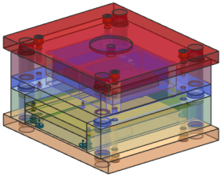

您将添加标准模架到您的模具装配中。
点击On the Mold Wizard toolbar, click Mold Base Library .
In the Mold Base Design dialog box, from the Catalog list, select DME.
In the list of index sizes, notice that index 3030 is selected.
The mold base index size was automatically selected from the sizes generated by the Cavity Layout command.
The default A Plate and B Plate thicknesses are shown in the lists BP_h and AP_h.
Consult the bitmap image of the mold base to see the components and their labels.
From the AP_h list, select 56.
Click OK.
Choose File→Save All.
